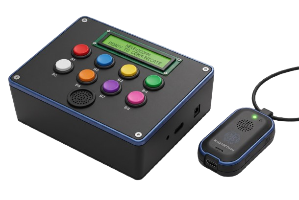

Predefined Message Selection
8 dedicated buttons for emergency and daily needs like “HELP!”, “NEED WATER”, and “CALL NURSE”.
NeuroComm is an embedded augmentative and alternative communication (AAC) device designed to help people with aphasia communicate daily needs through predefined messages and voice alerts. It consists of a transmitter board and a wearable necklace receiver.

Hover, focus, or tap a pin or part to see what it does.
8 dedicated buttons for emergency and daily needs like “HELP!”, “NEED WATER”, and “CALL NURSE”.
A 16x2 LCD screen readout.
DFPlayer Mini with speaker output.
HC-12 serial link between board and necklace.
ESP32-C6 necklace unit.
Tactile feedback from a motor driven by a 2N2222 transistor.
A buzzer and a bright LED.
Alerts reset on their own after 5 seconds.
Vibration, buzzer, and LED